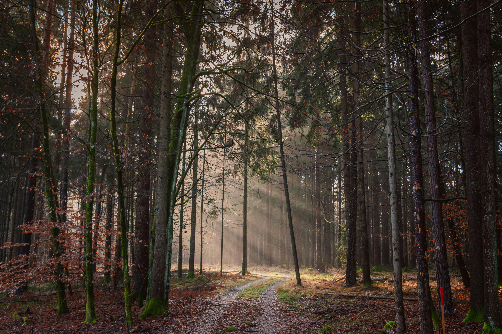

Sinem Havan
Bilgisayar mühendisliği 3. sınıf öğrencisiyim.İlgi alanlarım ile ilgili araştırmalar yapmayı, öğrenmeyi seviyorum. Yeni şehirler gezmeyi ve bilmediğim kültürleri deneyimlemeyi seviyorum. Son zamanlarda ingilizcemi geliştirmek için konuşma dersleri alıyorum.
Fotoğraf ve Video
Becerilerim
" Web geliştirme ve siber güvenlik konularına ilgi duyuyorum. Henüz yolun başında olduğum için kendimi bu alanlarda geliştirmek için çalışıyorum.Öğrenmeye ve araştırmaya istekli birisiyim.
Hedeflerim
Kısa vadeli hedefim iyi bir ingilizce seviyesine ulaşmak. uzun vadeli hedeflerim arasında ise alanında başarılı birisi olmak var.